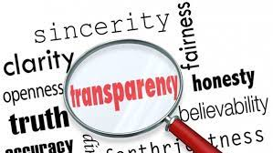

To Fight Corruption, we Must Embrace Transparency
Transparancy Definition (Merriam-Webster)
1: the quality or state of being transparent
2: something transparent especially : a picture (as on film) viewed by light shining through it or by projection Synonyms
Transparency is all about knowing who, why, what, how and how much. It means shedding light on formal and informal rules, plans, processes and actions. Transparency helps us, the public, hold all power to account for the common good.
Seeking and receiving information is a human right that can act as a safeguard against corruption, and increase trust in decision makers and public institutions. However, transparency is not only about making information available, but ensuring it can be easily accessed, understood and used by citizens.
But transparency is only the first step to curbing corruption
We have learned from over twenty-five years of experience that corruption can only be kept in check if representatives from government, business and civil society work together for the common good.